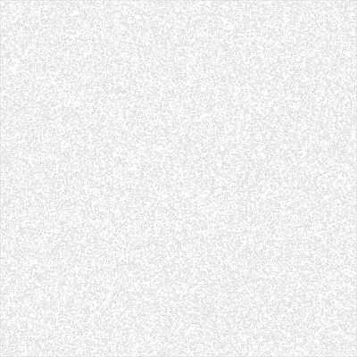
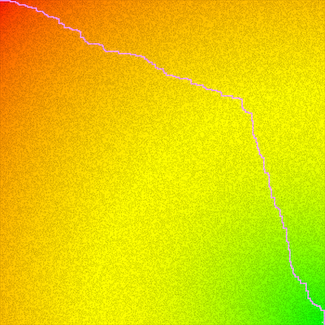
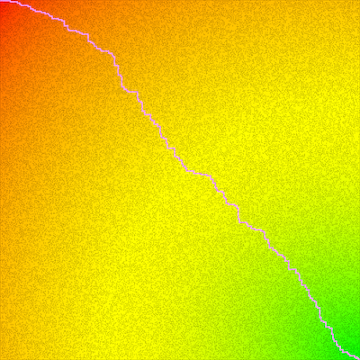
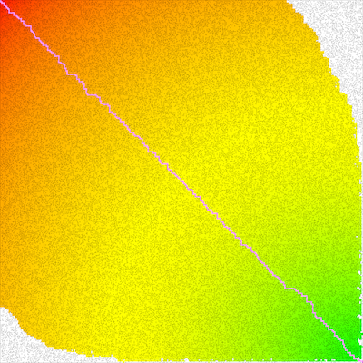
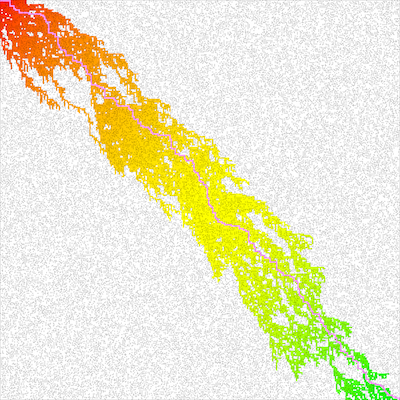
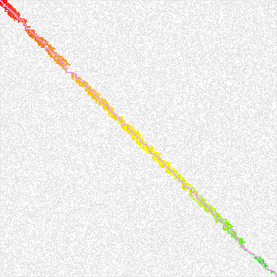

Performance comparison when solving (in practice)
The asymptotic runtime of solving the maze is roughly the same for each solution. Generally speaking, it is |V| multiplied by the longer runtime between the push() and pop() operation for the specified data structure used to queue unvisited nodes.
For DFS and BFS we use a stack and a queue respectively, each of which performs push() and pop() in O(1) time - hence O(|V|) overall runtime. For A* and Dijkstra we use a priority queue that performs push() and pop() in O(log |V|) runtime - hence O(|V| * log |V|) overall runtime.
We are not going to prove the average case runtime because the math can get quite complex. However, we are going to look at runtime in practice to make some observations and potentially determine one of the methods as the best method for solving the mazes generated by this application.
We start with a 300 x 300 square maze.

A maze generated with BFS + backtracking.
Above is a 300 x 300 square maze with 40% of the vertical walls removed and 52% of the horizontal walls removed so that there are many paths from start to finish. When searching for our target (from top left to bottom right) there are a total of 90,000 squares we can visit before exhausting our search. There is an optimal path length of about 599, although multiple optimal (and sub-optimal) solutions may exist.

Maze solved with DFS.
Here we solve with depth-first search. It is a brute force approach where we go as deep as possible before turning around and trying new paths. It works, but it does not give us an optimal solution. Here we found the target by visiting 6574 squares with a path of length 5017. We visited 7% of the grid, but do not have am optimal solution or anything close.

Maze solved with BFS.
We can find the optimal path by using another brute force method, breadth-first search. Which is, expanding as wide as possible before turning around. This gives us the optimal solution of length 599 but we visited all 90000 squares to find it. Not efficient.

Maze solved with Dijkstra's algorithm.
In theory, we could improve BFS by using Dijkstra’s algorithm, a uniform cost search algorithm that choses to visit adjacent neighbors with lower costs first. Unfortunately, for a maze, the cost to visit any neighbor is always exactly 1, so we are technically sorting 1’s every time. Dijkstra’s algorithm degrades to best-first search and acts nearly identically to breadth-first search. The only difference is sometimes the shape of the path because the ordering of nodes is slightly different. But, for a graph where all edges have the same cost, Dijkstra behaves like a brute force algorithm. Here we still visited all 90000 squares to compute an optimal path of length 599.

Maze solved with A* using euclidian distance as the heuristic.
Another improvement to solving the maze is using the A* search using the euclidian distance as the heuristic. However, since the euclidian distance will often be a diagonal line, this heuristic consistantly underestimates because we cannot actually go diagonally. So, it only helps us eliminate the extreme corners and we still branch off pretty far. We visited 84729 out of 90000 (94% of all) squares - very inefficient.

Maze solved with A* using manhattan distance as the heuristic.
An improvement to A* where only perpendicular movement is allowed is changing the heuristic to manhattan distance. That is, rather than computing the straight line distance, we imagine we are in the city of New York, trying to get to from the upper west side to the lower east side. We count the number of blocks downtown we must walk and then add that to the number of blocks east we must walk. This gives us a very close approximation as to how many squares we must visit. This produced a path of length 599 but we only visited 15764 squares - 17% of the maze.
However, we still notice that we are visiting many squares that do not contribute to the final result. The reason is because we have no mechanism for breaking ties between equally good options. For example, we see for this maze, many optimal solutions lie both above and below the straight line from the top-left corner to the bottom-right corner. If we are on a vertex that lies on the line, the vertices both above and to the right of our current position are equally good choices. We consider this a tie. Presently, we have no mechanism for breaking this tie so we explore both. We must add a tie-breaker.

Maze solved with A* using weighted manhattan distance as the heuristic.
Another improvement to A* is adding a weight to the heuristic, or a tie breaker. This allows us to impose a bias when we come across 2 equally weighted choices. This however, if it ever overestimates, will cause A* to output a slightly sub-optimal result. This breaks the admissible property of the heuristic. However, for most applications, this is okay if we are one or two steps off. The benefit is that depending on how much we weight the heuristic, we avoid straying off onto different paths.
For this particular application, we consider a step in a particular direction a vector. We compute the determinant of that step vector and the vector from origin to target. We then use some multiple of this value to add to our heuristic (manhattan distance).
The reason we do this is because the determinant of any 2d vectors tells us information about the angle made between the two vectors. The closer these vectors are to parallel, the small that angle gets - eventually reaching 0 if the vectors are perfectly parallel.
So, if we are above the line, and we have an equal choice to go right (further from the line) or down (closer to the line), even though the cost of both steps is 1 (equal), we break this tie by choosing the vector that produces an angle “most parallel” to the straight line from origin to target, which in this case is down because we are rotating towards the line rather than away from it.
This approach produces the optimal solution of length 599 in 2740 total visits. This is about 3% of the total number of squares. This is a highly efficient approach, although sometimes producing slightly sub-optimal solutions depending on the admissibility of the heuristic.
Conclusion
Clearly using A* with weighted manhattan distance is the fastest approach at finding a solution. If the maze had one solution, it may perform nearly identically to unweighted manhattan. But, we see the biggest pitfall of A* is tiebreaking. However, this can be easily overcome by slightly breaking admissibility. This is often the favored approach in real life.
Speed > Optimality